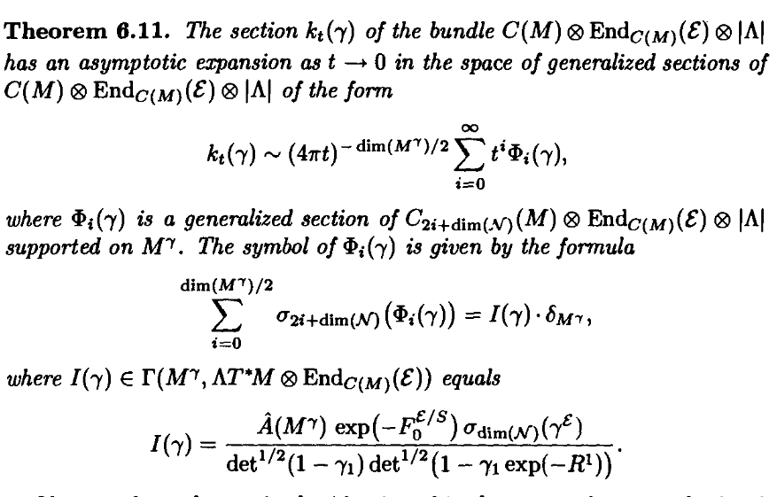
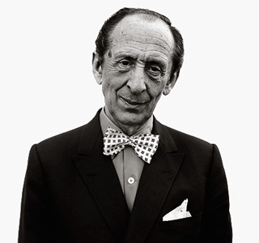
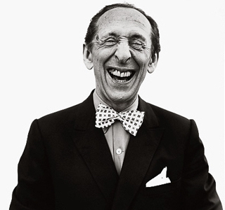

<!DOCTYPE html>
<html lang="en">
  <head>
    <meta charset="UTF-8" />
    <meta name="viewport" content="width=device-width, initial-scale=1.0" />
    <meta http-equiv="X-UA-Compatible" content="ie=edge" />
    <link
      rel="stylesheet"
      href="https://use.fontawesome.com/releases/v5.2.0/css/all.css"
      integrity="sha384-hWVjflwFxL6sNzntih27bfxkr27PmbbK/iSvJ+a4+0owXq79v+lsFkW54bOGbiDQ"
      crossorigin="anonymous"
    />
    <link rel="shortcut icon" type="image/png" href="../images/favicon.png" />
    <link rel="stylesheet" href="../css/main.min.css" />

    <title>Han's Homepage</title>
  </head>

  <body id="bg-img-interest">
    <header>
      <div class="menu-btn">
        <div class="btn-line"></div>
        <div class="btn-line"></div>
        <div class="btn-line"></div>
      </div>

      <nav class="menu">
        <div class="menu-branding">
          <div class="portrait"></div>
        </div>
        <ul class="menu-nav">
          <li class="nav-item">
            <a href="../index.html" class="nav-link">Home</a>
          </li>
          <li class="nav-item">
            <a href="work.html" class="nav-link">My Work</a>
          </li>
          <li class="nav-item current">
            <a href="interest.html" class="nav-link">My interests</a>
          </li>
          <li class="nav-item">
            <a href="about.html" class="nav-link">About Me</a>
          </li>
          <li class="nav-item">
            <a href="contact.html" class="nav-link">Contact Me</a>
          </li>
        </ul>
      </nav>
    </header>

    <main id="interest">
      <h1 class="lg-heading">
        My <span class="text-secondary">Interests</span>
      </h1>
      <h2 class="sm-heading">
        Things that I am really into
      </h2>
      <div class="interest">
        <div class="interest-sec">
          <div class="fun-boxes">
            
            
          </div>
          <div class="fun-text">
            <h2 class="text-secondary">
              Heat Kernel
            </h2>
            <p>
              Heat kernel is by far one of the most awe-inspiring topics in
              mathematics. It is in my humble opinion an omnipresent topic in
              mathematics and beyond. Moreover, The spectral theory associated
              to Laplacian delivers so much useful information that people has
              been using various tools to study its behaviour. This includes,
              but not limited to: number theory, representation theory,
              functional analysis, harmonic analysis, etc. I plan to blog my
              minor knowing about it in near future.
            </p>
          </div>
        </div>
        <div class="interest-sec">
          <div class="fun-boxes">
            
            
          </div>
          <div class="fun-text">
            <h2 class="text-secondary">
              Programming
            </h2>
            <p>
              I have only picked up programming half an year ago. Nonetheless, I
              find the coding community has been insofar the most
              willing-to-share group of people and I have learnt a lot from
              people such as
              <a href="https://pythonprogramming.net/">Harrison Kinsley</a> and
              <a href="http://traversymedia.com/">Brad Traversy</a>. In near
              future I will keep a list of useful websites from where I gathered
              coding tips.
            </p>
          </div>
        </div>
        <div class="interest-sec">
          <div class="fun-boxes">
            
            
          </div>
          <div class="fun-text">
            <h2 class="text-secondary">
              Music
            </h2>
            <p>
              I was FORCED to play seven years of piano. Now I am an dilettante
              of classical music and its theory. I do particularly enjoy early
              Russian school composer such as
              <a href="https://en.wikipedia.org/wiki/Sergei_Rachmaninoff">
                Sergei Rachmaninoff</a
              >,
              <a href="https://en.wikipedia.org/wiki/Peter_Rachmaninoff"
                >Peter Tchaikovsky</a
              >
              as well as
              <a href="https://en.wikipedia.org/wiki/The_Five_(composers)"
                >The Mighty Five</a
              >.
              <a href="https://en.wikipedia.org/wiki/Vladimir_Horowitz"
                >Vladimir Horowitz</a
              >
              is my role model and my favourite pianist. Other pianists in my
              Hall of Fame include 
              <a href="https://en.wikipedia.org/wiki/Arthur_Rubinstein">
                Arthur Rubinstein</a
              >
              and
              <a href="https://en.wikipedia.org/wiki/Art_Tatum">Art Tatum</a>.
              As for conductors, I frequented the recordings of
              <a href="https://en.wikipedia.org/wiki/Yevgeny_Mravinsky">
                Yevgeny Mravinsky</a
              >
              and
              <a
                href="https://en.wikipedia.org/wiki/Wilhelm_Furtwängler
              "
                >Wilhelm Furtwängler</a
              >.
            </p>
            <p>
              <a
                href="http://www.laits.utexas.edu/wagner/ringmotives/alphindex.html"
              >
                Here</a
              >
              you can find the semi-complete list of all motives in
              <a href="https://en.wikipedia.org/wiki/Der_Ring_des_Nibelungen">
                Der Ring des Nibelungen</a
              >
              which I found very useful in understanding motives. (NOT MATH
              MOTIVES!)
            </p>
          </div>
        </div>
        <div class="interest-sec">
          <div class="fun-boxes">
            
            
          </div>
          <div class="fun-text">
            <h2 class="text-secondary">
              Gaming
            </h2>
            <p>
              I am mildly addicted to all sorts of games, from sandbox games
              like
              <a href="https://www.minecraft.net/de-de/">Minecraft</a> to indie
              games like
              <a href="https://www.stardewvalley.net/">Stardew Valley</a>. My
              recent favorite is
              <a href="https://www.zizouqi.com/en.html">Autochess</a>.
              <a href="https://en.cdprojektred.com/">CD Project Red</a>,
              <a href="https://www.rockstargames.com/">Rockstar</a> and
              <a href="https://en.wikipedia.org/wiki/Blizzard_North"
                >Blizzard North</a
              >
              are amongst my faviourite gaming companies.
            </p>
            <p>
              I am a lousy RTG, MOBA (~3000MMR) and Go (~20Kyu) player. I was a
              Bloodelf Priest of healing spec for two years.
            </p>
          </div>
        </div>
      </div>
    </main>
    <footer id="main-footer">
      Copyright &copy; 2019 Zhicheng Han &#9675; Photo taken in Bonn, June 2018
    </footer>
    <script src="../js/main.js"></script>
  </body>
</html>
